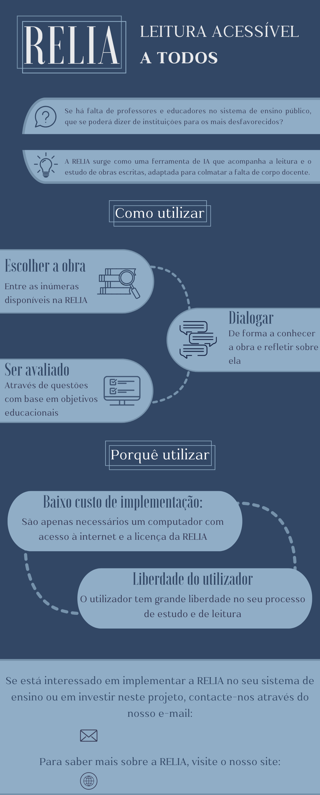

A RELIA é uma ferramenta inovadora de IA conversacional projetada para transformar a experiência de leitura e aprendizagem. Criada para enfrentar os desafios impostos pelos contextos socioeconómicos desfavorecidos, a missão da RELIA é promover a inclusão educacional, proporcionando uma experiência de leitura acessível e reflexiva para todos os utilizadores.
A origem da RELIA está na resposta à questão: Terão os contextos socioeconómicos de cada indivíduo um efeito na sua educação literária, ou mais propriamente, na falta dela? A resposta é um claro sim, o que evidencia um problema a resolver.
Da necessidade de uma solução nasce a RELIA, uma ferramenta de IA conversacional com o objetivo principal de acompanhar o utilizador no seu processo de leitura e aprendizagem de uma obra literária. O objetivo principal da RELIA é promover a inclusão educacional, proporcionando uma experiência de leitura acessível, reflexiva e enriquecedora, independentemente do contexto socioeconómico dos utilizadores.
Escolha da obra: A RELIA oferece uma vasta seleção de obras literárias à disposição do utilizador, acompanhada por temas predefinidos como personagens, contexto histórico e vertentes estilísticas. Estes temas operam como uma forma de "quebrar o gelo" e ajudam na orientação do utilizador durante o seu processo de leitura e aprendizagem.
Diálogo Socrático: O processo de aprendizagem é baseado no diálogo socrático, mantido entre a RELIA e o utilizador. Este método promove uma interação dinâmica e reflexiva, ajudando a desenvolver competências críticas. A RELIA adapta-se às necessidades do utilizador, podendo dialogar em diferentes línguas e registos, tornando a experiência acessível e personalizada.
Ponto de Reflexão: Após explorar a obra, o utilizador é desafiado com o Ponto de Reflexão, onde responde a perguntas críticas sobre a obra. Este processo inclui uma avaliação que oferece sugestões para melhorar a compreensão e estimular um progresso contínuo.
Nada se Perde: Com a RELIA, nada se perde. Todas as conversas sobre diferentes obras, assim como os Pontos de Reflexão e avaliações, ficam guardados no sistema. Isto permite ao utilizador criar um dossier que regista e acompanha o seu progresso ao longo do tempo.
A RELIA promove a análise reflexiva e o pensamento crítico, competências essenciais para o sucesso académico e para a cidadania ativa. Como salienta Linda M. Murawski, estas competências são fundamentais para formar cidadãos autónomos, capazes de tomar decisões informadas e enfrentar os desafios da vida. Além disso, a RELIA recolhe dados educacionais, permitindo uma melhoria contínua do processo de ensino, beneficiando tanto os utilizadores como os educadores.
